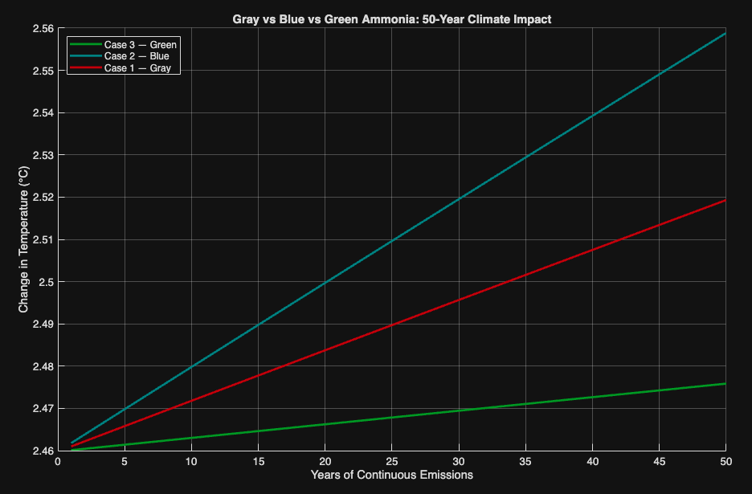

01
Computational Modeling
Gray, Blue & Green Ammonia: Decarbonization Model
A quantitative climate impact model comparing three ammonia production pathways — gray (steam methane reforming), blue (SMR with carbon capture), and green (electrolysis powered by renewables) — modeled over a 50-year emissions horizon.
Methodology
Radiative forcing was computed for CO₂, CH₄, and N₂O using standard IPCC forcing equations. Emissions were propagated year-over-year and converted to temperature change via a 0.5 × ΔF sensitivity factor. A key finding: blue ammonia produces greater warming than gray due to methane leakage during SMR and transport — consistent with real-world critiques of blue hydrogen as a transition fuel.
MATLAB
Radiative Forcing
Lifecycle Analysis
Decarbonization A
Brown University

50-year temperature projection — gray vs blue vs green ammonia